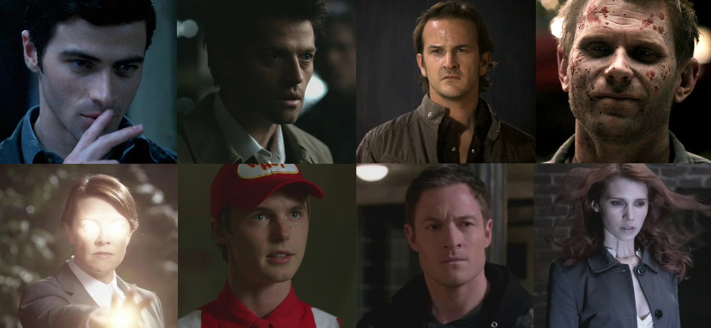

description

Les Anges sont des créations de Dieu(Chuck). Il existe 8 catégories d'Anges connus. Ces derniers,
pour la plupart, ont tous une tâche précise à accomplir. La première mention d'Ange dans la série
est à la saison 2 épisode 15, on le duo Sam et Dean font la connaissance de Gabriel l'embrouilleur,
qui s'avèrera plus tard être un Archange de la création. De par leurs rangs céleste, les Anges sont
plus puissants que les Démons aux yeux noir et les Démons des croisements. Contrairement aux démons
qui étaient des humains, les anges ont été créé par Dieu et sont très anciens. Pour venir sur Terre
et interagir avec les humains, ils doivent investir un hôte humain mais cela est possible que s'ils
en obtiennent l'autorisation de l'hôte en question (par opposition à la possession démoniaque).
Leurs véritables formes se présentent sous une lumière qui brûles les yeux des humains et leur voix
ressemble à un cri, pouvant provoquer des hémorragies internes.
Pouvoirs
- Super force : Étant des être supérieurs aux démons possèdent une force et une endurance bien plus grande que celle des démons.
- Exorcisme / Purification / Châtiment : D'un simple touché sur les démons, monstres ou humains ils peuvent tuer ces derniers en les purifiant. L'opération nécessite qu'ils posent une mains sur la tête de la victime.
- Télékinésie : Ils sont capable de déplacer les objets ou alors des personnes par la pensée.
- Possession angélique : Les anges ont besoin d'un hôte humain pour interagir avec les personnes.
- Intelligence : Ils sont très intelligents et ont une grande connaissance.
- Guérison : ils possèdent la faculté de se régénérer très rapidement, sauf s'il s'agit de blessures infligées par ses semblables qui elles, mettent beaucoup plus longtemps à guérir. Il peuvent aussi le faire pour soigner d'autres personnes.
- Télépathie : Ils peuvent lire dans les esprits et pensées.
- Résurrection : Les Séraphins peuvent ramener des personnes à la vie. Ex: Castiel a ressuscité Bobby et Zachariah a ressuscité Adam Milligan.
les anges connus
Archanges
- Michael
- Lucifer
- Raphael
- Gabriel
Séraphins
- Castiel
- Zachariah
Ange
- Uriel
- Anna Milton
- Joshua
- Balthazar
- Rachel
- Hester
- Samandriel
- Naomi
- Metatron
- Ion
- Espère
- Nathaniel
- Gadreel
- Hannah